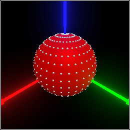

8 Collision Detection
TODO: exposition about intersection tests, surface data, etc.
type
predicate
The type and predicate of surface data.
procedure
(surface-data dist pos [ #:normal normal #:path path]) → Surface-Data dist : Nonnegative-Flonum pos : Pos normal : (U #f Dir) = #f path : (Listof Tag) = empty
Constructs surface data. Usually, you would receive such data from trace/data
or surface/data, rather than constructing it yourself.
procedure
(surface-data-dist data) → Nonnegative-Flonum
data : Surface-Data
procedure
(surface-data-pos data) → Pos
data : Surface-Data
procedure
(surface-data-normal data) → (U #f Dir)
data : Surface-Data
procedure
(surface-data-path data) → (Listof Tag)
data : Surface-Data
Return the attributes of data.
procedure
pict : Pict3D v : Pos dv : Dir (trace pict v1 v2) → (U #f Pos) pict : Pict3D v1 : Pos v2 : Pos
Finds the first surface in pict intersected by a ray starting at v with direction
dv, or between v1 and v2.
Returns the intersection point when such a surface exists; otherwise #f.
This does not return points on the back faces of triangles or the insides of solid shapes.
If inside? is #f, finds the outermost, outward-facing surface from
(center pict) in direction dv.
Otherwise, surface finds the innermost, inward-facing surface from (center pict)
in direction dv.
In either case, when such a surface exists, surface returns the intersection point;
otherwise it returns #f.
Examples:
> (define pict (with-color (rgba "red") (sphere origin 1/2)))
> (combine pict (for*/list ([ρ (in-range -85 86 10)] [θ (in-range -180 180 10)]) (sphere (surface pict (angles->dir θ ρ)) 0.01))) 
procedure
(trace/data pict v dv) → (U #f Surface-Data)
pict : Pict3D v : Pos dv : Dir (trace/data pict v1 v2) → (U #f Surface-Data) pict : Pict3D v1 : Pos v2 : Pos
Like trace, but additionally returns surface data.
procedure
(surface/data pict dv [#:inside? inside?]) → (U #f Surface-Data)
pict : Pict3D dv : Dir inside? : Any = #f
Like surface, but additionally returns surface data.
procedure
(trace/normal pict v dv) → (Values (U False Pos) (U False Dir))
pict : Pict3D v : Pos dv : Dir (trace/normal pict v1 v2) → (Values (U False Pos) (U False Dir)) pict : Pict3D v1 : Pos v2 : Pos
Like trace/data, but only additionally returns a surface normal.
procedure
(surface/normal pict dv [#:inside? inside?])
→
(Values (U False Pos) (U False Dir)) pict : Pict3D dv : Dir inside? : Any = #f
Like surface/data, but only additionally returns a surface normal.
Returns the minimum and maximum corners of a rectangle that contains the visible objects in
pict, if one exists.
Returns the center of pict’s bounding rectangle, if one exists.